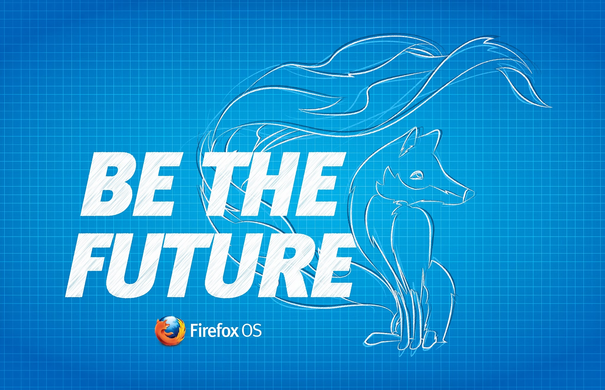
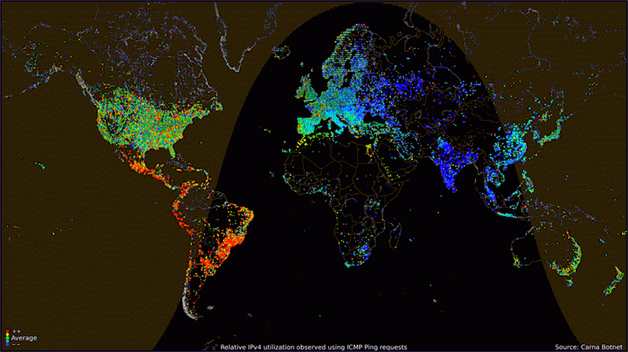
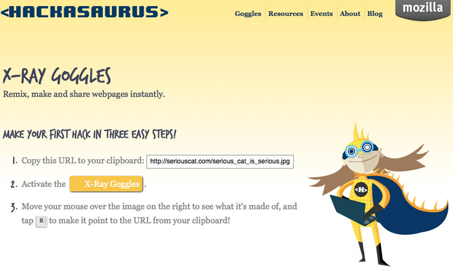
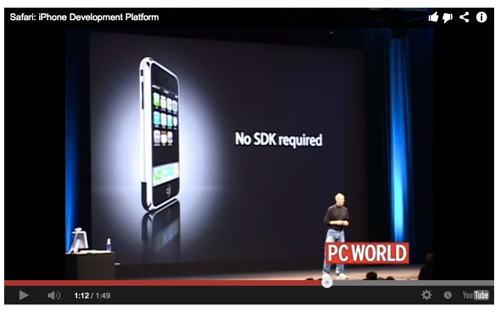

Webmaking in the App Space
This slide deck is using the shower system - roll over the previews to see the notes and click any slide to go into presentation mode. Then use keys to navigate. Go fullscreen
Abstract:
Mozilla has been very much involved in turning consumers of the web into creators of the web. In this presentation you will learn about the past of this idea, what is happening right now and how Firefox OS gives you the power to be a maker of apps without needing to learn many new things.
Webmaking in the App Space

Chris Heilmann, Campusparty 2013, London, England

This is a visualisation of Internet activitiy during a day. All of these points is people using the web for all kind of things. We'd love if all of these were yellow to red, but sadly there are still some black spots. What this means though is that each blip here could be a consumer of web content or a maker of new web content as the web is the only media where the two are very close to another.
Webmaking, not so long ago…
Mozilla Webmaker
Mozilla Webmaker is a project by Mozilla to increase the web literacy of people by means of providing them with tools to understand that the web is not in a fixed state but made up from lots of small code parts that are not hard to reach and alter.

Hackasaurus/X-Ray Goggles
Hackasaurus and X-Ray Goggles was the first tool released. It was a bookmarklet aimed at kids to show them the "hidden" HTML in a document and allow them to change for example images by copying a pasting a new URL into the src attribute.
Thimble Project
Thimble was the natural evolution of that idea. Instead of remixing live sites you could see the HTML on the left and you had a live rendering of the HTML on the right. You could alter existing projects or create new ones and then share them with the world.
This concept is not new, after all it breaks down the barrier between consuming and creating immediately and thus gives instant gratification. In the last few years there has been quite an explosion of collaborative code editing tools out there, here are just a few. These are great. Instead of describing a development issue, you can just try it out and send people the code to fix with you.
In the last years, however, the use of the web has shifted from desktop computers over laptops to mobile devices and we seem to have lost the idea of a remix-able, read+write web.
Now it is all about apps!
Apps are the hot new thing - except they are not. In essence an app is a thing that does one thing well and is contained in itself. Instead of opening a web site and having it next to many other tabs you open an app and it is the main focus of your attention. People love this. It gives users a catered experience for one task without being distracting. The good news is that the web technologies around HTML5 are flexible enough to cover both cases: you can create a web site but also very easily turn it into an app.
Something that does one thing well
Something that works wherever I am - offline or online
Something that let's me *do* things
Something that is simple to use
Something that stays up to date and syncs across devices
Something that I can own and customise
An app is actually nothing new. It is just a more focused solution to a problem or a convenient way to fill a use case. The technology it is written in is irrelevant, as long as it does a few very crucial thing.

Jobs' original vision - no third party native apps
This tighter focus of apps meant that we needed to extend the technology stack of the web. This was what HTML5 was about - allowing you to use HTML and JavaScript to create applications instead of linked documents. When Apple released the iPhone the original promise was that there will not be a new technology to build apps for the smartphone. After all that was what he hated in feature phones.
This great idea, however, got forgotten really quickly and the interesting parts of a phone (the accelerometer, the camera, local storage, sharing content easily) were not allowed to access in HTML5. Instead you had to write apps in native languages.
Being spectators is not enough!
Photo by Iain Heath
Now, we could have waited to see what is happening in the mobile space and hoped that the great features of the web, ease of distribution, remixability, low barrier to entry, got included in the closed platforms again. But that's not Mozilla. You can't innovate by waiting and hoping.
Instead we built Firefox OS - a new mobile operating system, completely based on open web technologies and aimed at the markets that others don't cover. Both fulfilling the promises made by other platforms and following the principles defined in the Mozilla Manifesto.
The mobile platform HTML5 deserves
Unlike other platforms, HTML5 is not a second class citizen in Firefox OS. The system itself, the UI of the OS, is written in HTML5. Instead of hoping for support of HTML5 features, the OS is very much dependent on them.
Predictable browser support
Firefox OS uses the browser's rendering engine as the main component to create interfaces. That's why you can not have the issues you have with Android, for example, where newest browser versions are not available for an older version of the operating system. With Firefox OS, you have predictable browser support, rather than having to support outdated stock browsers and find workarounds.
Firefox OS is not targeting the same markets as iOS and Android. Its main purpose is to bring web connectivity to markets that can't afford other platforms or aren't even supported by them. That's why Firefox OS users are not comparing what you do as app developers to the latest iOS or Android releases. Your job as app developers for Firefox OS is to bring the first impression of the web to lots and lots of new users. Not an easy task, but also a very rewarding one. Instead of copying Angry Birds and not getting the hardware performance you need you could be the new Angry Birds for a totally new audience.
Upgrading the mobile world
Targeted at new, emerging markets
Very affordable hardware
No credit card needed - client billing
Web technologies through and through
18 mobile partners, 4 hardware partners
Firefox OS was created to bring users of feature phones into the web-enabled mobile world. It is meant to cater to the markets not covered by iOS and Android. Yes, you can buy cheap Androids world-wide but the version of Android they support doesn't have an out-of-the-box browser that allows you to do interesting things on the web. Much like Firefox and Opera for Android allow more users world-wide to have a great web experience without having the latest hardware, Firefox OS goes further. Its main goal is to bring millions of new users to the web on their mobile devices without getting a second-grade experience.
Everything in the OS is open web technology and standard proposals
Firefox OS is not another closed platform. Everything in the OS is open web technology and based on proposals to the standards bodies. This means the research we did by building Firefox OS and the research you do by making your apps work on it gets fed back to Firefox on Desktop and all the other browsers, making the web a better place.
What makes a great app?
Apps are the big thing right now so of course Firefox OS is not a browser, but an OS with apps. The difference is that the apps are written in HTML5, and only in HTML5. You don't need another technology and in most cases you can promote your mobile friendly web site to an app in a very simple way.
{
"name": "My App",
"description": "My elevator pitch goes here",
"launch_path": "/",
"icons": { "128": "/img/icon-128.png" },
"developer": {
"name": "Your name or organization",
"url": "http://your-homepage-here.org"
}
}
App manifest
The main step to turn an HTML5 page/app into a Firefox App is to define an app manifest. These are simple files in JSON defining the name of your app, where the icons are and what permissions you need for the application to work. They need to be sent with the right MIME type on the server and get submitted to the Mozilla marketplace. See them as a quick description of your app.
Install apps from the web
var installapp = navigator.mozApps.install(manifestURL);
installapp.onsuccess = function(data) {
// App is installed
};
installapp.onerror = function() {
// App wasn't installed, info is in
// installapp.error.name
};
Installing applications from the web is possible by using the open web apps API, which is part of the WebAPI work in Mozilla. You can test if navigator.mozApps is supported and then create a button that calls the install method pointing to the URL of the manifest file of the app to be installed. You then get onsuccess and onerror handlers to deal with the returned objects of the install process. This means that any mobile friendly web site can be turned into an app in a few minutes, and that all the work you put into making your sites found in search engines wasn't wasted, but actually is now advertising for your app.
WebAPI Wiki
The WebAPI effort of Mozilla is tracked and described on the wiki.
Vibration API
Screen Orientation
Geolocation API
Mouse Lock API
Open WebApps
Network Information API
Battery Status API
Alarm API
Push Notifications API
WebFM API / FMRadio
WebPayment
IndexedDB
Ambient light sensor
Proximity sensor
Notification
Using WebAPIs to make the web layer more capable
Hosted applications, meaning HTML5 apps you run on your own server, get the full functionality of HTML5 and additional API support shown here. All of these APIs are defined on the Mozilla Wiki and proposals to the standard bodies. Some of them have already been implemented in other other browsers, like the geolocation API. For now, however, only Firefox OS gives you all of them. These APIs bring much needed extra functionality to the HTML5 stack.
var b = navigator.battery;
if (b) {
var level = Math.round(b.level * 100) + "%",
charging = (b.charging) ? "" : "not ",
chargeTime = parseInt(b.chargingTime / 60, 10),
dischargeTime = parseInt(b.dischargingTime/60,10);
b.addEventListener("levelchange", show);
b.addEventListener("chargingchange", show);
b.addEventListener("chargingtimechange", show);
b.addEventListener("dischargingtimechange", show);
}
This is an example of how to use one of those APIs. They come with properties, methods and fire a lot of events which makes it easy to include them in your own solutions. And as you can see using a simple if statement around your code ensures that only environments that support it execute your code.
Hosted apps - stored on your server, easy to upgrade, limited access.Privileged apps - reviewed by the App store, packaged and signedCertified apps - part of the OS, only by Mozilla and partners
App permissions
There are three different type of apps in Firefox OS: Hosted Apps, Privileged apps and Certified apps. The first kind is hosted on your own server and has access to a limited amount of extra functionality Firefox OS offers on top of what HTML5 gives you. Privileged apps have much more access to the hardware and must be hosted by Mozilla. Certified apps are part of the operating system and are only built by Mozilla and partners.
configure
costcontrol
dial
open
pick
record
save-bookmark
share
view
new, f.e type: “websms/sms” or “webcontacts/contact”
If you want to access the camera or the address book without packaging your application, there is an alternative called Web Activities. These are much like Web Intents were for Chrome, but more focused on real use cases of the web rather than Android. Using Web Activities you can access the hardware without having to authenticate on the user's behalf. Instead, the users get prompted to use the apps they always use to give you what your app wants.
Sending a number to the phone
var call = new MozActivity({
name: "dial",
data: {
number: "+1804100100"
}
});
This, as an example, is a call activity. When this JavaScript executes, the user will be sent to the dialer app (or Skype, depending on what app was defined as the default one), the number is sent to the app and the user needs to initiate the call. This is the main difference to WebAPIs - the user has the final say. When the call is denied or the user hung up the phone would go back to your app.
Get an image from the phone (1/2)
var getphoto = new MozActivity({
name: "pick",
data: {
type: ["image/png",
"image/jpg",
"image/jpeg"]
}
});
The 'pick' activity is most probably the most useful one, as it allows you to tell the user that you want something from the device. In this case we define in the MIME type array that we are expecting an image. This would result in the screenshot shown on the right - the user gets asked to give us an image, either from the wallpaper or the photos folder or by taking a new photo with the camera.
Get an image from the phone (2/2)
getphoto.onsuccess = function () {
var img = document.createElement("img");
if (this.result.blob.type.indexOf("image") != -1) {
img.src = window.URL.createObjectURL(this.result.blob);
}
};
getphoto.onerror = function () { // error
};
To retrieve the photo all you need is a simple event handler in which you get the image as a data blob and you can play with it in your app.
Activities/Hosted Apps on Android
The great news is that if you have Firefox on Android, this functionality is also available outside of Firefox OS for you - any Android device will do.
Conversion of HTML5 to native code
http://build.phonegap.com/
Phonegap is an excellent tool to convert HTML5 Applications to native apps for Android of iOS. The other way around this isn't possible, but by using Phonegap you can build for HTML5, and still cover all the other markets.
One of the main differences of Firefox OS to other platforms is that apps are indexable and can be categorised - as all they are is HTML. That way we were able to build a more intelligent search into the system. Instead of having to know the name of an app you enter what you are looking for. This could be a name of a band and you'd find music apps that have songs by the band. Or a ticket app where you can get concert tickets. We made app discovery as easy as surfing the web. The other benefit is that instead of having to download and install the apps you can try them out immediately and install them in a second step. It is a proper try before you buy.
Firefox OS Simulator
The Firefox OS Simulator is an add-on for Firefox which simulates a phone on your computer. You can test the install process and buying and selling applications and you can send apps directly to a connected phone. You can also debug your applications directly from your computer including live CSS changes.
Prototyping with JSFiddle
Write your code as you might normally when making a JSFiddle
Append /webapp.manifest to your Fiddle URL and paste this link into the Firefox OS simulator to install the app
Alternatively, append /fxos.html to your Fiddle URL to get an install page like a typical Firefox OS hosted application
Using JSFiddle to prototype Firefox OS Apps
JSFiddle is a very simple way to create code collaboratively online. The latest version now also has the feature to publish the code you wrote as a Firefox OS app to test things out.
Building FirefoxOS
Building Firefox OS is a resource that shows you how the operating system itself was built. It is the source code of Gaia, the user interface of Firefox OS, proving that nothing in the OS is closed source. You can use these principles to make your app look "native" on Firefox OS, but be aware that they are not catered to high performance apps.
Firefox OS Building blocks
FirefoxOS edit mode
The Firefox OS building blocks are reusable components that make up the apps that are part of the operating system (certified apps). You could say that they are the look and feel of the operating system. They are not, however, built for high-performance apps like social media streams or games. You can use these building blocks to get started but you need to be sure that your app will look like it is part of the operating system, which might confuse end users. For higher performance and more styling options without the danger of OS styles overriding what you do, check out Mozilla Brick.
Brick – Introducing Brick
Mozilla Brick is a more intelligent way to deal with the issue of UI components on the web. It is a library that allows to build apps from Web Components wrapped in custom tags. That way your markup becomes minimal, the components don't have the problem of styling of the main document being inherited and they perform much better than DOM-created components as their rendering is part of the browser rendering flow.
Web Activities Boiler Plate
Firefox OS Boiler Plate app
The Firefox OS Boiler Plate app by Robert Nyman is a perfect start to get accustomed to Web Activities. It is a showcase of buttons calling different web activities. Simply use the ones you want to have and delete the others. The code is highly commented to show you where to put your functionality.
Flathead demo URL
The latest and greatest - currently very much in Alpha - in the space of webmaking is being shown here right now at Campus Party. Mozilla Appmaker is a way to create apps for mobile devices simply by dragging and dropping different components onto cards and connect their functionality with a colour-coded interface. The main difference of this compared to the UI components shown earlier is that appmaker creates web components, which results in high performing apps.
Here are some other things to check out if you want to learn more about Firefox OS.
http://www.mozilla.org/en-US/firefox/os/
This is a end-user facing information page about Firefox OS. There are no developer news or infos here but it is interesting to see how end users can benefit from using Firefox OS.
https://marketplace.firefox.com/
The Firefox OS marketplace is where you can get apps for Firefox OS. It is the end user facing resource for new apps and your apps will show up here.
https://marketplace.firefox.com/developers/
The developer hub is a one-stop solution for everything about Firefox OS - you get information what makes a good HTML5 application, you can download demo apps to change and you learn how to submit your app to the marketplace.
 Thimble Project
Thimble Project